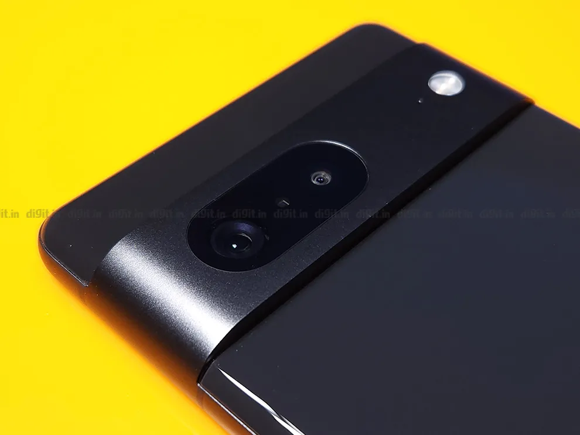
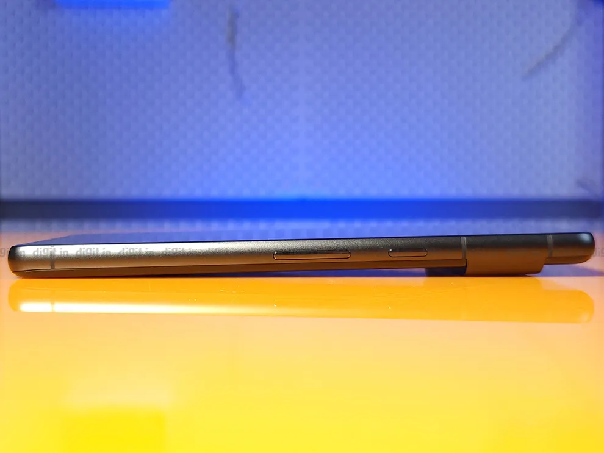

Google Pixel 7 5G Review: Winning Android smartphone formula?
verdict
Pixel fans will rejoice knowing that the Pixel 7 offers everything that makes a Pixel phone desirable –
fantastic camera performance and optimised and clean software. Add to that a bright OLED display, decent
battery life, and a compact build, and you have what could be a winning Android smartphone formula. However,
this phone doesn't hold a candle to the raw performance offered by the iPhones and Samsung flagships of this
world.
Google Pixel 7 5G detailed review
After four long years, Pixel lovers can finally rejoice since Google has brought back the Pixel series of smartphones to India. While the brand did intermittently launch the Pixel A-series (Pixel 6a review) devices in India, the company has kept its premium-tier of smartphones out of India since the Pixel 3 series launched back in 2018. Fans of the Pixel experience have waited with bated breath for the potential return of these premium-tier Pixel phones in India – and now, they’ve got what they wished for. We recently reviewed the Pixel 7 Pro and concluded that “while it may not be a phone for gamers, it could very well be the perfect Android phone for every other premium segment user.” Priced at a more palatable ₹59,999, the Pixel 7 could be the more value-for-money proposition from Google for those vying to pick up one of the latest Pixel 7 series phones. The Pixel 7 builds on the Pixel 6 from last year, bringing some incremental upgrades with it. Let’s see how it fares in our review.
Google Pixel 7 Review: Build and design
The Pixel 7 retains the distinctive design cues Google popularised on the Pixel 6 series. It is a glass sandwich with an aluminium frame. The two-tone colour profile is gone and instead, we’ve got a single colour separated by the visor-like camera module. This bump is now made of textured aluminium – replacing the glass on its predecessor – and honestly, it gives the phone a more premium look.
The camera module strip is a really distinctive look that sets the phone apart from others. Google has used 100 per cent recycled aluminium in the construction of the Pixel 7, so props to the company for that.
This camera module does eliminate wobbling when the device is placed flat on a surface, but one negative is excessive dust accumulation in the ridges of the camera module which you will need to wipe down from time to time.
The smartphone also sports rounded edges which makes one-handed operation a breeze; also aided by its compact form factor. The phone is also decently lightweight, weighing in at 197g. It also comes with an IP68 rating, making it dust and water-resistant. There’s the SIM tray on the left, the USB-C charging port on the bottom, and the power and volume buttons on the right.
Google Pixel 7 Review: Display
The Pixel 7 houses a compact 6.3-inch OLED display with 1080 x 2400 FHD+ resolution and 90 Hz refresh rate support. Unlike its more expensive sibling, this one isn’t equipped with an LTPO panel though. The display is capable of smartly adapting its refresh rate based on the content displayed on it. This helps in battery life conservation. However, the phone supports only 90 Hz refresh rate, which seems inadequate at this price point where most of the competition offers 120 or even 144 Hz refresh rate support.